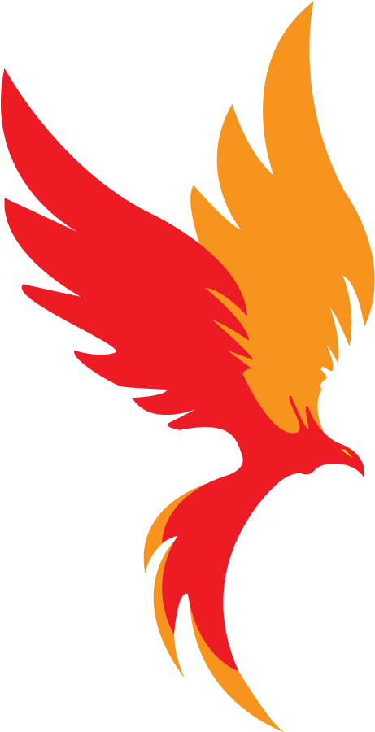
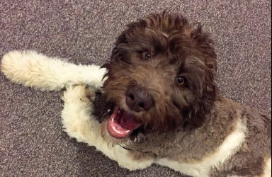
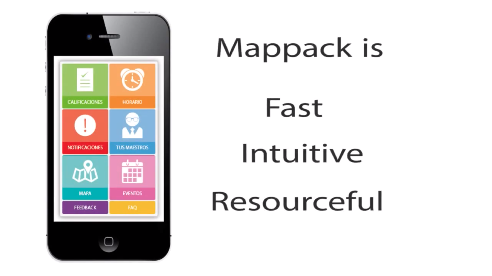

Callejón Diagonal
Participé en la realización de un e-commerce fictio. Escribí el código de tres secciones (Contacto, Delivery y Acerca de Nosotros) además de ser el encargador de escoger la tipografía y la paleta de colores, redactar el wording de todos los productos, cambiar el diseño para una mejor experiencia (UX/UI) y haber dado la idea original del proyecto. Este proyecto fue presentado ante reclutadores y técnicos en la Feria de la Empleabilidad organizada por Generation México en noviembre de 2021.
Generador de Historias
Pequeño generador de historias graciosas hecho con Javascript. Se basa en utilizar métodos que modifican los strings como replace() o split(), genera de manera aleatoria nuevos valores con cada click y tiene la capacidad de modificar el input inicial del usuario cambiando el primer caracter a mayúscula. Además contiene una conexión API con la base de datos de Dog CEO que genera una imagen nueva con cada historia.
Melolalia

Proyecto de música electrónica influenciada por hip hop que utiliza en su mayor parte sintetizadores de software y procesamiento vocales. Iniciado en 2021, por el momento se encuentra un lanzamiento oficial en plataformas digitales, varias propuestas en Souncloud y múltiples producciones lanzadas en el sello discográfico de Buena Onda Música; un esfuerzo en conjunto con el artista Tury Fresh donde la meta es impulsar artistas sonorenses hacia el nuevo horizonte de la industria musical.
Mappack
Fundador del prototipo de una aplicación que empezó como proyecto escolar y que formó parte de los 10 mejores startups en el país de acuerdo a los jueces del Desafío Intel. La semifinal nacional se realizó en Guadalajara con una presentación en inglés en el Centro de Sofware - Sala WITSA ante diversas personalidades del sector tecnológico y potenciales inversionistas. El proyecto nunca terminó de concretarse por diversas causas y quedó solo en la descripción de la idea.
